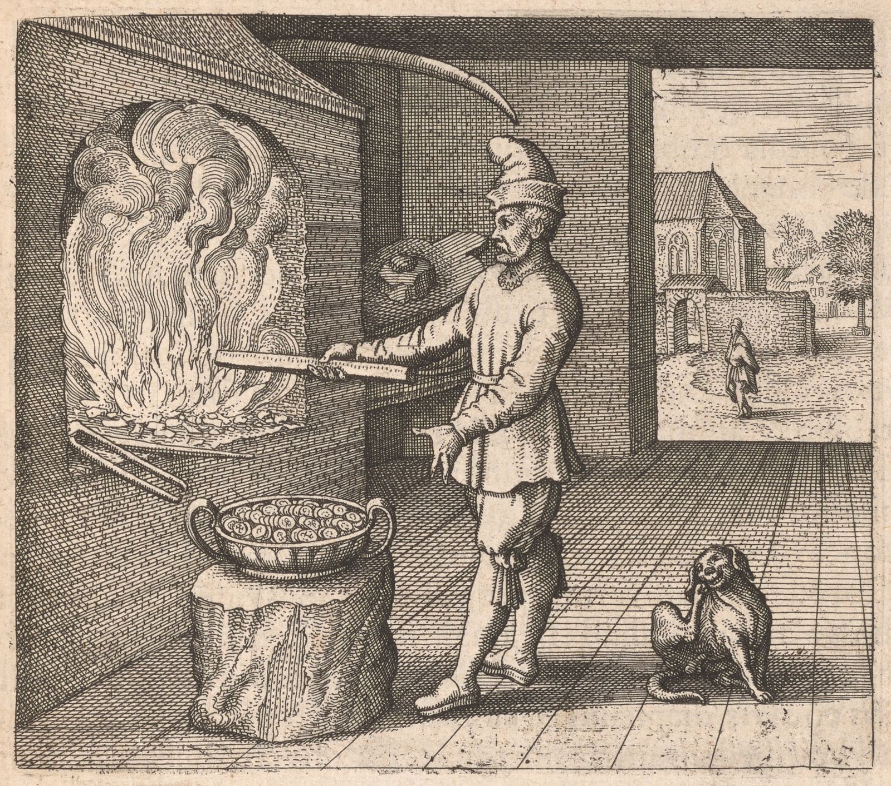

081
Embleme Emblem 18. Of the Secrets of Nature. Fire loves to burne burn, not to aurify, but gold.
EmblemeEmblem 18. Of the Secrets of Nature.
Fire loves to burneburn, not to aurify, but gold.

Epigramme Epigram 18.
All Natures agents doe do their seed diffuse,
That thus they may their species produce:
Soe So fire makes all things fire, nor ever was
A true effect without its proper cause:
Gold generates noe no fire, fire noe no gold indeed;
All things are propagated by their seed.
Epigramma XVIII.
Si quod agens fuerit naturae, mittit in orbem
Vires atque suas multiplicare cupit.
Obiva sic ignis facit ignea cuncta, nec est res,
Absque sua causa nobile quae det opus.
Aurum nil ignit per se, nil ignis inaurat,
Quodlibet agnoscit quod sibi semen inest.
XVIII. Epigrammatis Latini versio Germanica.
Ein jedes wirckendes Ding der Natur rund umbsich läßt gehn/
Seine Krafft / dadurch mag ein Vermehrung geschehn /
Also das Feiur alles / so ihm nahet / pflegt feiurig machen /
Und nichtes bringt ein Werck so edel ohn Ursachen /
Das Gold kan nicht geben deß Feiurs / noch Feiur deß Goldes Krafft /
In jedem Ding sein eigen Samen natürlich hafft.
Epigramme Epigram 18.
All Natures agents doe do their seed diffuse,
That thus they may their species produce:
Soe So fire makes all things fire, nor ever was
A true effect without its proper cause:
Gold generates noe no fire, fire noe no gold indeed;
All things are propagated by their seed.
82
e18-01Naturae operãndi ratio est in omnib.us universi individuis, ut simplici utatur processu ad unũm simplicẽm motũm perficiendũm, quẽmadmodũm apparet in Anatomia corporis humani, in quo unus musculus
tantum uni inservit motui, nempe attractivo, expansivo vero alter
primo oppositus, ita ut, si in gryũm aliquod membrũm ducẽndũm sit, id variis in circulum positis musculis efficiatur: e18-02Ita ignis operatio una et
simplex est, ut nimirũm calefaciat et igniat, imo sibi assimilet et cõmburat omnia, quib.us admovetur, si sint cõmustibilia: e18-03Hinc Avicẽnna in
lib.ro de congelatione lapidũm, quod cadit, inquit, in salinas, fit sal, et ꝙuod
in ignẽm, fit ignis, sed quaedãm citius et quaedam tardius, secundum potentiãm activarũm et resistentiãm passivarũm: e18-04Estq;ue locus in Arabia, qui coloroat omnia corpora in ea existẽntia, suo color: Ita singulae res naturales sibi a natura infusam virtutẽm possidẽnt, qua agãnt in sibi mixta vel
admota assimilãndo et alterãndo eorũm naturãm et formãm: e18-05Quod in vegetabilib.us et animalib.us generatio est per seminũm propagationẽm, hoc
in simplicib.us vel simpliciter mixtis corporib.us est virtutis infusio et assimilatio: e18-06Sol, cli lumn, radios de sese projicit in terras, qui collectis
in concavis vel cõmburentib.us speculis, demonstrãnt sese a tali causa productos esse, ac quasi formas projectibiles Solis videri: e18-07Unde constat
radios solares nihil aliud esse, quam flammãm igneãm extẽnsam et dispersam in amplãm latitudinẽm, quae collecta et iterum in se cõndẽnsata instrumẽntis cõncavis, diaphanis et circularib.us vel repercussivis, cõcavis et
chalybeis speculis, uti flãmma emicat et obvia cõmburit: e18-08Eundem ad
modũm in quodãm elementato corpore virtus quaedãm, velut vapor, dispergitur, qu si colligatur et attrahatur in unũm, fit aqua et ex ea aqua
terra: e18-09Hinc Avicẽnna ante allegato loco, ex aqua, inquit, fit terra, cũm
vincũnt eãm qualitates terrae et econverso: e18-10Est autẽm res quaedãm, qua utũntur quidãm ingeniosi cum volunt rẽm siccam coagulare, quae cõmponitur
ex duab.us aquis, et dicitu lac virginis, quod est ejus effectus certissimus. e18-11Hae ille: Sunt, qui promittant, se in magnete lapide vires duplicare vel multiplicare posse, veluti ejusmodi nobis visus est argẽnto
inclusus vix põndere unius libr qui anchorãm ferreãm 28. librarũm attraxit et sustinuit, ꝙuod impossibile fuisset, nisi vis auctior et fortior reddita
83
in eo extitisset; e18-12quuod absque dubio per revocationem dispersarum
virtutum in unum quasi punctum seu polum, factum fuit, vel ex magno corpore in minus attractionem earundem; e18-13Inveniuntur alii,
ꝙuod plumbificũm lapidem ex Saturni sulfurea aura in Mercurium vulgi
donec inde coaguletur, infusa et retenta, fieri posse dicant, qui Mercurium communem continue convertat in plumbum. e18-14Quidam ex
antimonio vel ejus stellato Reguluo cuprum ex cupri odore, eo temporis spacio, quo quis ovum comedat, efficere posse jactant, imo
omnia metalla fecisse: verum illis sua sit debita fides, quamvis in
hoc mihi non fiat verisimile: e18-15Audaciores, nescio an foeliciores sunt,
qui aurum ex auro deducere conantur juxta Poëtae aurei dictum:
Hordea cui cordi, demum serit hordea, in auro semina sunt auri.
e18-16Habet quidem quae libet res naturalis vim quandam sese multiplicandi, at haec in vegetabilibus et animalibus saltem in actum proferuntur, neutiquamin metallis mineralibus, terrae fossilibus aut meteoris: e18-17Plantarum quaedam ex parvo seminii grano ortae dant non
raro mille aut plura seminum grana, seque ita multiplicant et propagant, idque annuatim; Animalia et suos habent foetus magni vel
parvi numeri, pro cujusque natura. e18-18At aurum, argentum, plumbũm,
stannum, ferrum, cuprum aut argentum vivum nunquam inventum est eo modo sese vel suam speciem multiplicasse, licet unum in
aliumd commutatum et nobilitatum saepissime repertum sit: e18-19Nihilominus Philosophi affirmant, ut in igne ignificandi principium extat,
sit in auro aurificandi: verum tinctura quaeritur, cujus medio aurum
fiat: e18-20Haec indaganda est in suis propriis principiis et generationibus
non in alienis: Namsi ignis ignem producat, pyrus pyrum, equus
equum tum plumbum plumbum et non argentum, aurum aurum
et non tincturam generabit: e18-21Ad haec aurum philosophis proprium
est quod non negant pro fermento in fine operis Lapidi aurifico adjici debere, sed necessario requiri quoque asserunt. Cum fermentum ducat fermentum in sui naturam, sine quo totat compositio
ad perfectionem nunquam rediret.
082
Discourse 18.
Natures way of operating in all individualls individuals of the universe is to use onee03-01
single processe process to complete and perfect one single motion, as appears in the
Anatomy of mans body, in which one muscle serves onely only for one motion,
that is, the attractive, but for the expansive another opposite to the first, soe so
that if any part or member be to be brought into a circular forme form, it must
be effected by various muscles placed circlewise: soe so the operation of fire
is one and single, that is to say, to heat and fire, yea assimilate to itselfe itself, and
burne burn all things, to which it is applyed applied, if they be combustible: Hereupon
Sayth Says Avicenne in his booke book of the congelation of stones: That which falls into Saltpitts Saltpits, becomes Salt, and that which into fire, becomes fire, but somethings sooner,
some Slower, according to the power of atives actives, and the resistence resistance of passives: And
there is a place in Arabia, which coloureth colors all bodyes bodies in it of its owne own colour color: Soe So
every naturall natural thing possesseth possesses the virtue infusd infused into it by nature, by which
it acts upon things mixd mixed or applyed applied to it, assimilating and altering their nature
and forme form: That which is generation in vegetables and animalls animals by the propagation of seeds, is the infusion of virtue and assimilation in single bodyes bodies
or singly mixd mixed: the Sunne Sun, the light of heaven, projects its rayes rays upon the
earth, which, being gathered together in concavous or burning glasses, doe do demonstrate themselves to be produced from such a cause, as to appear to be the
projectible formes forms of the Sunne Sun: Whereby it is manifest that the rayes rays of the
Sunne Sun are nothing els else, but a fiery flame extended and dispersed into an ample
latitude, which being dilated and againe again contracted by concavous, diaphanous
and circular or repercussive instruments, doth does in concavous and steele steel mirrors
Shine as a flame, and burne burn things obvious to it: after the same manner, a
certaine certain virtue is as a vapour vapor dispersed in a certaine certain elemented body, which,
if it be gathered together, and attracted into one, turnes turns into water, and that
water into earth: For this reason sayth says Avicenne in the booke book before alleadged alleged,
Earth is made of water, when the qualityes qualities of earth overcome it, and soe so on
the contrary: But there is a certaine certain thing, which some ingenious men doe do
use when they have a mind to coagulate a dry substance, which is compounded of two waters, and is called Lac virginis, which is the most certaine certain
effect of it: thus Sayth Says hee he: Some are there are that assure themselves
able to increase or multiply virtues in the Loadstone, as the like wee we have
seen sett set in Silver, which being scarce one pound weight attracted and held up an
iron anchor of 28 pounds, which would have been impossible, if the virtue
had not been increasd increased and made stronger 083in it, which without doubt was
done by revocation of the dispersed virtues as it were into one point or pole,
or by the attraction of the same out of a great body into a lesse less: Others are
found, who say that a plumbifying Stone may be made by the Sulphurous
breath of Saturne Saturn, infused and retained, till it be thereby converted into
coḿon common Mercury, which continually converts coḿon common Mercury into lead.
Some boast that they can by Antimony, or the stellated Regulus thereof make Copper from the fume of Copper, in that time wherein a
man may eat an egge egg, yea that they have made all metalls metals: but
I will not detract from their reputation, though to mee me it seems not
6i
likely to be true: I know not whether they are more confident or
successefull successful, who endeavour endeavor to deduce gold from gold, according to the
saying of the golden Poett Poet: Hee He that desires barley sowes sows onely only barley,
in gold is the seed of gold: Every naturall natural thing hath has indeed a certaine certain
virtue of multiplying itselfe itself, but these things are brought into action
in Vegetables and animalls animals onely only, not at all in Metalls Metals, Mineralls Minerals, things
dugge dug out of the earth, or Meteors: Some plants sprung from a small
graine grain of seed doe do oftentimes yeild yield a thousand or more grains of seed,
and soe so multiply and propagate themselves, and that yearly; Animalls Animals allso also have their Products of greater or lesse less number, according
to the nature of every one: But gold, Silver, lead, tinne tin, iron, copper, or
Argent vive are never found to have multiplyd multiplied themselves or their species
after that manner, though one may be very often found commuted and
nobilitated into another: Neverthelesse Nevertheless the Philosophers affirme affirm that the
principle of ignifying is in fire, soe so of aurifying in gold: but where is
the tincture, by which gold must be made? This must be sought in
its owne principles and generations, not in things of another nature: For
if fire produceth produces fire, a Pear a Pear, a horse a horse, then lead must
generate lead and not Silver, gold gold and not the tincture: Moreover
the Philosophers have a peculiar gold, which they doe do not onely only not
deny that it ought (but allso also affirme affirm it necessarily requisite) to be
added to the aurificke aurific Stone as a ferment as the end of the worke work. The
ferment, converting the thing fermented into its owne own nature, without
which the whole composition would never come to perfection . . . .
82
e18-01Naturae operãndi ratio est in omnib.us universi individuis, ut simplici utatur processu ad unũm simplicẽm motũm perficiendũm, quẽmadmodũm apparet in Anatomia corporis humani, in quo unus musculus
tantum uni inservit motui, nempe attractivo, expansivo vero alter
primo oppositus, ita ut, si in gryũm aliquod membrũm ducẽndũm sit, id variis in circulum positis musculis efficiatur: e18-02Ita ignis operatio una et
simplex est, ut nimirũm calefaciat et igniat, imo sibi assimilet et cõmburat omnia, quib.us admovetur, si sint cõmustibilia: e18-03Hinc Avicẽnna in
lib.ro de congelatione lapidũm, quod cadit, inquit, in salinas, fit sal, et ꝙuod
in ignẽm, fit ignis, sed quaedãm citius et quaedam tardius, secundum potentiãm activarũm et resistentiãm passivarũm: e18-04Estq;ue locus in Arabia, qui coloroat omnia corpora in ea existẽntia, suo color: Ita singulae res naturales sibi a natura infusam virtutẽm possidẽnt, qua agãnt in sibi mixta vel
admota assimilãndo et alterãndo eorũm naturãm et formãm: e18-05Quod in vegetabilib.us et animalib.us generatio est per seminũm propagationẽm, hoc
in simplicib.us vel simpliciter mixtis corporib.us est virtutis infusio et assimilatio: e18-06Sol, cli lumn, radios de sese projicit in terras, qui collectis
in concavis vel cõmburentib.us speculis, demonstrãnt sese a tali causa productos esse, ac quasi formas projectibiles Solis videri: e18-07Unde constat
radios solares nihil aliud esse, quam flammãm igneãm extẽnsam et dispersam in amplãm latitudinẽm, quae collecta et iterum in se cõndẽnsata instrumẽntis cõncavis, diaphanis et circularib.us vel repercussivis, cõcavis et
chalybeis speculis, uti flãmma emicat et obvia cõmburit: e18-08Eundem ad
modũm in quodãm elementato corpore virtus quaedãm, velut vapor, dispergitur, qu si colligatur et attrahatur in unũm, fit aqua et ex ea aqua
terra: e18-09Hinc Avicẽnna ante allegato loco, ex aqua, inquit, fit terra, cũm
vincũnt eãm qualitates terrae et econverso: e18-10Est autẽm res quaedãm, qua utũntur quidãm ingeniosi cum volunt rẽm siccam coagulare, quae cõmponitur
ex duab.us aquis, et dicitu lac virginis, quod est ejus effectus certissimus. e18-11Hae ille: Sunt, qui promittant, se in magnete lapide vires duplicare vel multiplicare posse, veluti ejusmodi nobis visus est argẽnto
inclusus vix põndere unius libr qui anchorãm ferreãm 28. librarũm attraxit et sustinuit, ꝙuod impossibile fuisset, nisi vis auctior et fortior reddita
83
in eo extitisset; e18-12quuod absque dubio per revocationem dispersarum
virtutum in unum quasi punctum seu polum, factum fuit, vel ex magno corpore in minus attractionem earundem; e18-13Inveniuntur alii,
ꝙuod plumbificũm lapidem ex Saturni sulfurea aura in Mercurium vulgi
donec inde coaguletur, infusa et retenta, fieri posse dicant, qui Mercurium communem continue convertat in plumbum. e18-14Quidam ex
antimonio vel ejus stellato Reguluo cuprum ex cupri odore, eo temporis spacio, quo quis ovum comedat, efficere posse jactant, imo
omnia metalla fecisse: verum illis sua sit debita fides, quamvis in
hoc mihi non fiat verisimile: e18-15Audaciores, nescio an foeliciores sunt,
qui aurum ex auro deducere conantur juxta Poëtae aurei dictum:
Hordea cui cordi, demum serit hordea, in auro semina sunt auri.
e18-16Habet quidem quae libet res naturalis vim quandam sese multiplicandi, at haec in vegetabilibus et animalibus saltem in actum proferuntur, neutiquamin metallis mineralibus, terrae fossilibus aut meteoris: e18-17Plantarum quaedam ex parvo seminii grano ortae dant non
raro mille aut plura seminum grana, seque ita multiplicant et propagant, idque annuatim; Animalia et suos habent foetus magni vel
parvi numeri, pro cujusque natura. e18-18At aurum, argentum, plumbũm,
stannum, ferrum, cuprum aut argentum vivum nunquam inventum est eo modo sese vel suam speciem multiplicasse, licet unum in
aliumd commutatum et nobilitatum saepissime repertum sit: e18-19Nihilominus Philosophi affirmant, ut in igne ignificandi principium extat,
sit in auro aurificandi: verum tinctura quaeritur, cujus medio aurum
fiat: e18-20Haec indaganda est in suis propriis principiis et generationibus
non in alienis: Namsi ignis ignem producat, pyrus pyrum, equus
equum tum plumbum plumbum et non argentum, aurum aurum
et non tincturam generabit: e18-21Ad haec aurum philosophis proprium
est quod non negant pro fermento in fine operis Lapidi aurifico adjici debere, sed necessario requiri quoque asserunt. Cum fermentum ducat fermentum in sui naturam, sine quo totat compositio
ad perfectionem nunquam rediret.